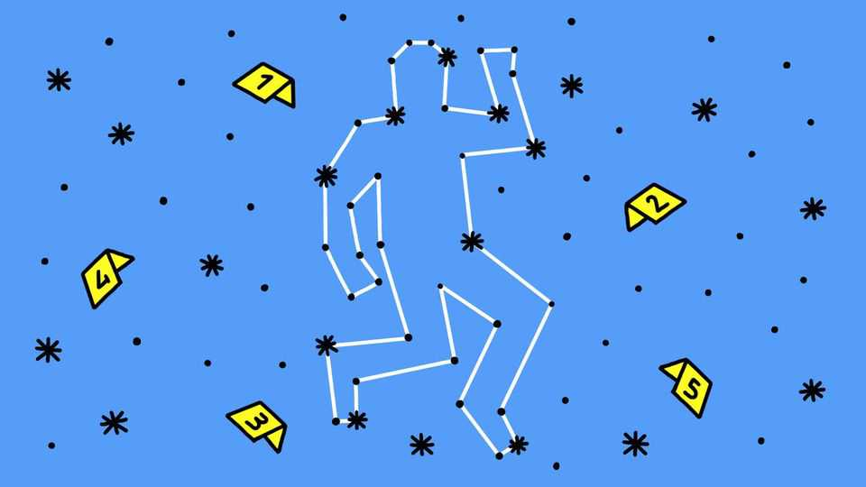

Burglars could be identified from airborne DNA
Skin cells, dandruff and saliva are largely responsible

Oct 8th 2026
BURGLARS HAVE been steadily running out of things they can safely leave behind at a crime scene. First came footprints, then fingerprints and stray fibres. Even microscopic strands of DNA left on tools and surfaces have been used to catch the incautious. Now they have something else to worry about: fragments of genetic material in the air.
All people, criminals and non-criminals alike, shed tiny traces of themselves wherever they go. Some of this material—mainly skin cells, dandruff and saliva—ends up suspended as a personal debris cloud that can hang around after the person is gone. A new study published in Forensic Science International: Genetics, a journal, shows that volunteers who pretended to ransack houses in controlled tests could be identified from DNA pulled from the air 30 minutes after they scarpered. As with most forensic evidence, it alone is not proof of wrongdoing. But it could raise some awkward questions for someone without a good reason to be there.
Carried out by a team led by Chiara Fantinato at Oslo University Hospital, the study is an impressive application of methods to capture and analyse what is known as environmental DNA (eDNA)—the genetic traces left by an organism in its surroundings. For more than two decades ecologists have used eDNA from water, soil and atmosphere to detect creatures without needing to see or capture them. The technique has been used to track elusive Burmese pythons in the Florida Everglades and to audit the inhabitants of Loch Ness. (Fish and plenty of eels. No plesiosaurs.)
In 2022 the Oslo group showed that enough eDNA could be collected from indoor air to construct genetic profiles of its occupants. In a separate test, they analysed office air to identify workers who had recently occupied the space. That led them to wonder if the same techniques could be used for forensic purposes. Working with a group in Australia, the researchers found 22 households, split evenly between Oslo and Adelaide, who were willing to allow into their homes first a mock burglar and then a forensics team in full protective gear to run an air-sampling device in the kitchen for a couple of hours.
The intruders were people who had never previously visited the houses. They were asked to spend 15 minutes inside, opening drawers and cupboards as a burglar might. After they fled the scene, the scientists waited 30 minutes, to simulate the delay before investigators might arrive, and then turned on what Dr Fantinato says was basically a vacuum cleaner. They sifted the material collected for DNA and analysed it in the usual way. As airborne DNA falls to the ground, where it contributes to surface dust, the researchers also collected sweeps to build their forensic profiles.
The results offered better news for housebreakers in Australia than Norway. Whereas the samples collected in Oslo could be matched to intruders in 82% of cases, the success rate dropped to 36% for Adelaide. The reasons for the difference are unclear, but could be due to such factors as environmental conditions, the number of people living in the house and how well the various rooms had been cleaned.
There are other complications to note. DNA found in the air does not always have to be from a recent visit, for example: movement can stir DNA-carrying dust into the air, or DNA from people who have never set foot inside could be carried in on people’s clothes. The researchers themselves were surprised by how sensitive their technique was. Despite the efforts they put in to prevent their own DNA leaking into the crime scenes, some was vacuumed up and identified anyway.
It is unlikely, Dr Fantinato says, that air samples would ever prove reliable enough to provide the clinching evidence of someone’s guilt. “It’s an investigative tool,” she says. “Like other types of DNA evidence, it’s just part of the puzzle.” It is still too early to apply the method to real cases. That will require understanding such nuances as why different people shed different amounts of DNA, and standardising techniques between labs. But her team has spoken to police forces about one day helping them with their enquiries. ■